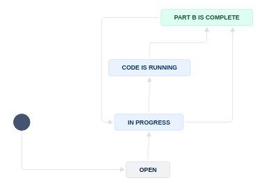

AEA Jira workflow#
For pre-publication verification, we use a Jira-based workflow to guide the replicator through the process of filling out the report (called REPLICATION.md).
Note
The link to JIRA is https://aeadataeditors.atlassian.net/jira (requires login).
New#
Warning
For most Jira issues created after 2024-01-30, we use a new workflow. In this, the report is initially split into REPLICATION-PartA.md and REPLICATION-PartB.md, and subtasks are created for preparing parts A and B. Once both parts are ready, they are merged back into REPLICATION.md.
Scope#
Your supervisor will assign you to this workflow. This workflow covers code and data, even when data may not be accessible. Supervisor, see other document for details.
This workflow DOES NOT cover simple metadata assessment of openICPSR deposits, for instance for AEA Papers and Proceedings deposits. See Instructions for Papers and Proceedings.
Overview#

The following table illustrates the flow and transitions. The transition field identifies the button that will appear in the interface
that needs to be clicked in order to progress an issue from the From state to the To state. The Condition field identifies
which form field needs to be filled out in order to be able to make the transition. Blocked is always an option, and leads to a “waiting state”
until a resolution can be found.
Warning
THIS STILL NEEDS UPDATES FOR V3 workflow
From |
Transition |
→ To |
Condition |
|---|---|---|---|
Assigned |
Create new repository |
→ Creating repository |
Issue is not a |
Bypass repository creation |
→ In Progress |
Issue is a |
|
Creating repository |
Start Task |
→ In Progress |
|
In Progress |
Assign to external replicator |
→ Waiting for external report |
|
At this point, there will be two subtasks: Prepare Part A and Run Part B. The following transitions are available for each of these subtasks, unless the issue has been assigned to an external replicator.

From |
Transition |
→ To |
Condition |
|---|---|---|---|
Open |
Writing preliminary report |
→ Writing Part A |
|
Writing Part A |
Finished Part A |
→ Preliminary Report Complete |
|

From |
Transition |
→ To |
Condition |
|---|---|---|---|
Open |
Prepare to run code |
→ In Progress |
Working area has been prepared |
In Progress |
Start running code |
→ Code is Running |
Some data is available |
In Progress |
No code can be run |
→ Part B is complete |
No data is available |
Code is Running |
Code is done running |
→ Part B is complete |
It is possible that a Pre-approver or an Administrator move the issue back to In Progress when additional debugging or code runs are necessary.
Once both parts are complete, the issue can be merged into REPLICATION.md and the final report compiled. This is also true once the external report has been received.

From |
Transition |
→ To |
Condition |
|---|---|---|---|
In Progress |
Write report |
→ Writing Report (Part C) |
|
Waiting for external report |
Write report |
→ Writing Report (Part C) |
|
Writing Report (Part C) |
Submit for review |
→ Report Under Review |
|
Multiple |
Need information |
→ Incomplete |
when information is missing |
Incomplete |
Restart task |
→ In Progress |
|
Incomplete |
Prepare report |
→ Writing Report (Part C) |
The following are only relevant for “Approvers” or “Pre-Approvers” (if you have not been told you are a “(Pre-)Approver”, you are not.)
From |
Transition |
→ To |
Condition |
|---|---|---|---|
Open |
Assign |
→ Assigned |
|
In Progress |
Alternate Workflow |
→ Alternate Workflow |
|
Under Review |
Approve |
→ Approved |
Can only be done by approvers. |
Pre-approved |
Approve |
→ Approved |
Can only be done by approvers. |
Under Review |
Pre-Approve |
→ Pre-Approved |
Can only be done by pre-approvers. |
. |
Incomplete |
→ Incomplete |
n.a. |
Approved |
Done |
→ Done |
n.a. |
Blocked |
Reopen |
→ Open |
n.a. |
The following are only relevant for “Publishers” (if you have not been told you are a “Publisher”, you are not.)
From |
Transition |
→ To |
Condition |
|---|---|---|---|
Approved |
Submit to MC |
→ Submitted to MC |
|
Submitted to MC |
Wait for response on ICPSR |
→ Pending openICPSR changes |
|
Submitted to MC |
Prepare for publication |
→ Pending Publication |
|
Pending openICPSR changes |
Prepare for publication |
–> Pending Publication |
|
Pending Publication |
Publish |
→ Published |
|
Notes#
In the Issue form, please also fill out other fields, as noted.
At any point, you can move the issue to
Incomplete: more information/action is required before you can proceed. You should also notify us of the situation ASAPWhen committing, you can use Smart Commits, e.g.
AEAREP-1234 #comment corrected indent issue
Use JIRA comments to communicate with your supervisor as issues arise, including code that takes a long time to run.
Details#
Additional details for each of the key stages are provided here. Below is a screenshot of a Jira ticket. Some things to note:
The blue
In Progressbox in the upper right - area 3 of the screen - is how you “advance” the Jira ticket. When you are first assigned a replication, this box will sayOpen.The tall grey bar on the left side - area 1 of the screen - contains several handy links that you will use throughout the process.
Sometimes this box is not visible. To make it visible, edit the URL for the Jira ticket so that there are no characters after the ticket number (e.g. AEAREP-123). You may have to refresh the page after doing so.